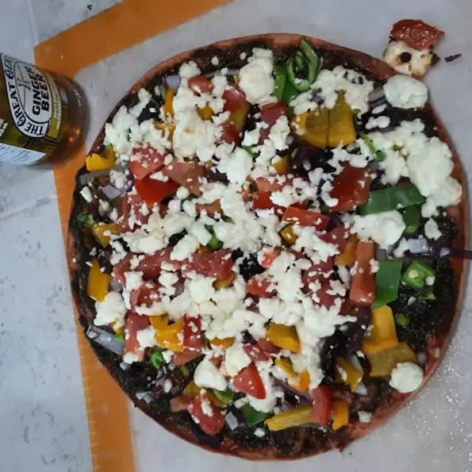

Pizza

Description
A great alternative to your regular pizza.
Ingredients
- 11 (12 inch) pre-baked pizza crust
- ½ cup pesto/li>
- 1 ripe tomato, chopped2 carrots, chopped
- ½ cup green bell pepper, chopped
- ½ small red onion, chopped
- 1/2 teaspon chicken broth base
Steps
- Preheat oven to 450 degrees F (230 degrees C).
- Spread pesto on pizza crust. Top with tomatoes, bell peppers, olives, red onions, artichoke hearts and feta cheese.
- Bake for 8 to 10 minutes, or until cheese is melted and browned.